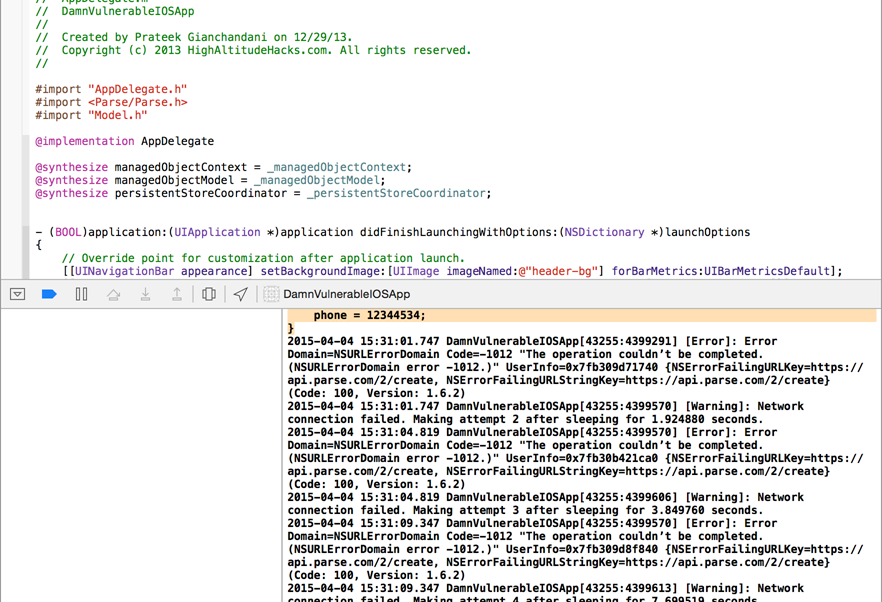
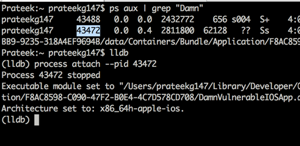
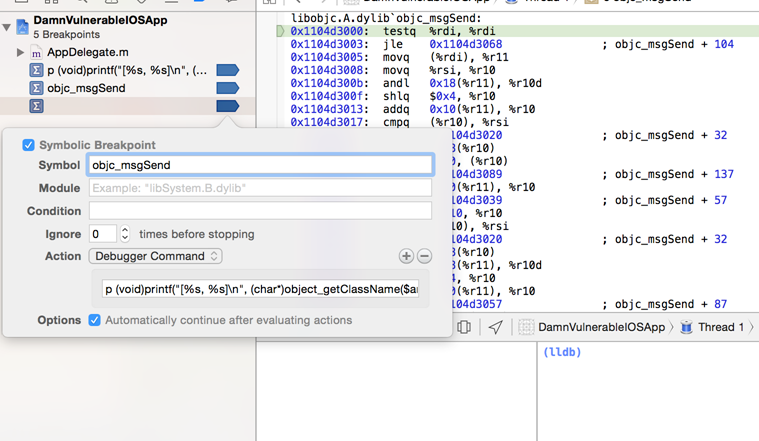
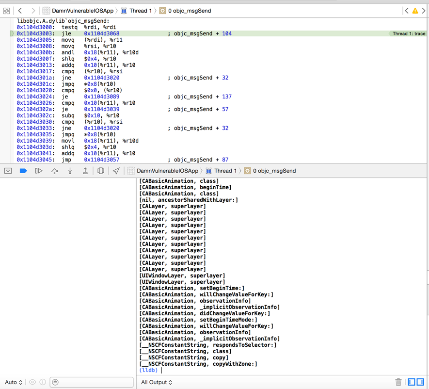
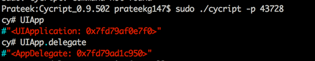

In this article, we will discuss the extent to which you can test applications on your Mac rather than the device. This could be useful for many reasons, sometimes you may not have a jailbroken device but want to get a POC for a vulnerability. We will discuss what are the things you can and cannot do. To test the application on your system, you will need to have Xcode installed on your system and you will run the applications on the iOS simulator.
Installing ipa files from iTunes on your simulator
Sadly, there is no way you can do that. This is because the iTunes applications are compiled for the ARM platform whereas the applications that run on your simulator are compiled for the x86/x64 platform. So, to test any application properly on your Mac, you must have the source code of the application to run it on the simulator.
In this case, we are going to perform our testing on Damn Vulnerable iOS app
Analyzing local data storage
One of the most important things to check during performing penetration testing of iOS applications is checking for insecure local data storage vulnerabilites. You can easily check this by looking at the application folder created on your Mac by Xcode.This folder is available at the following locations.
iOS 8 – /Users/[username]/Library/Developer/CoreSimulator/Devices/[a unique number]/data/Containers/Data/Application/[another unique number]/
iOS 7 – /Users/[username]/Library/Application Support/iPhone Simulator/[ios version]/Applications/[a unique id]/
Make sure to check this folder and see if the application is not storing any sensitive data to this folder.
Checking device logs
You can easily check the logs that the applications is logging by looking at the logs section in Xcode. For example, over here, we can see that the application is logging sensitive data to the device. However, if you see this behaviour, don’t immediately report it as a vulnerability. Some developers add a check to detect whether the application is running on a simulator or a device, and only log information if it is running on a simulator. If there is no such check, then this is definitely a vulnerability.

Attaching debuggers and Tracing method calls
You can attach a debugger to the running application in the simulator. Its better to use LLDB debugger since it comes installed with Xcode command line tools. The iOS application running on the simulator can also be seen as a running process on your computer by using the command ps aux. You can attach to the running application both by using the pid or the name.

You can easily trace the method calls by using the inbuilt debugger LLDB in Xcode. To do that, you need to add a symbolic breakpoint in Xcode. See the plus arrow in the bottom left and click on it to add a symbolic breakpoint.

Now set a breakpoint for the objc_msgSend call. Click on Add action and add the debugger command as p (void)printf(“[%s, %s]\n”, (char*)object_getClassName($arg1), $arg2) and make sure you check the option to continue execution of the program. You will notice that you are now able to trace all the method calls.

Attaching cycript
You can even attach Cycript to the running application process in the simulator and demonstrate POC for vulnerabilities. Cycript works for Mac as well and you use the exact syntax that you use while auditing application on your device.

Monitoring Network traffic
You can pretty much see all the network traffic over HTTP/HTTPs without any issues. You can either use Burpsuite or Charles for it. For HTTPs traffic, you will have to install the SSL certificate on your simulator. To do this, simply drag and drop the certificate file to your simulator, and click on install to install the certificate.

That’s it for this article. In the next article, we will look at using the LLDB debugger for debugging iOS applications.